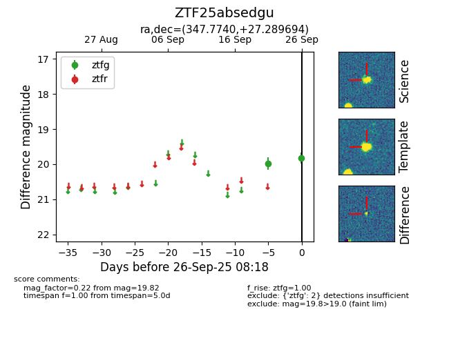

FINK: ZTF25absedgu
Lasair: ZTF25absedgu
ALeRCE: ZTF25absedgu
ZTF25absedgu (ztf,fink)
equatorial (ra, dec) = (347.7740,+27.28969)
galactic (l, b) = (97.0060,-30.48180)

last ztfg=19.82
2 ztfg detections